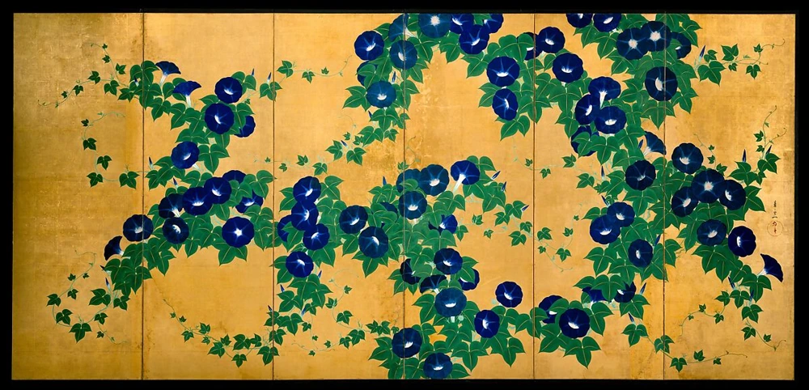
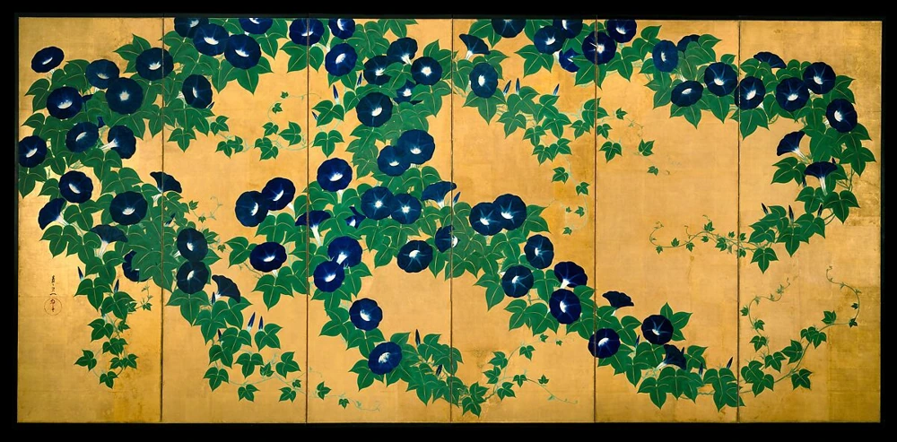
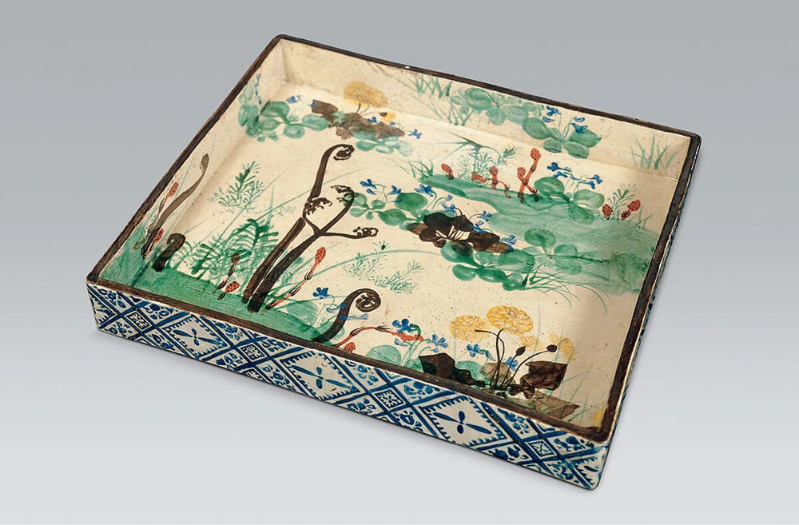
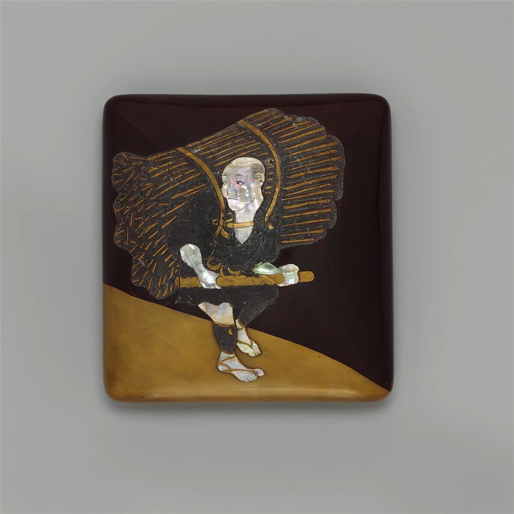
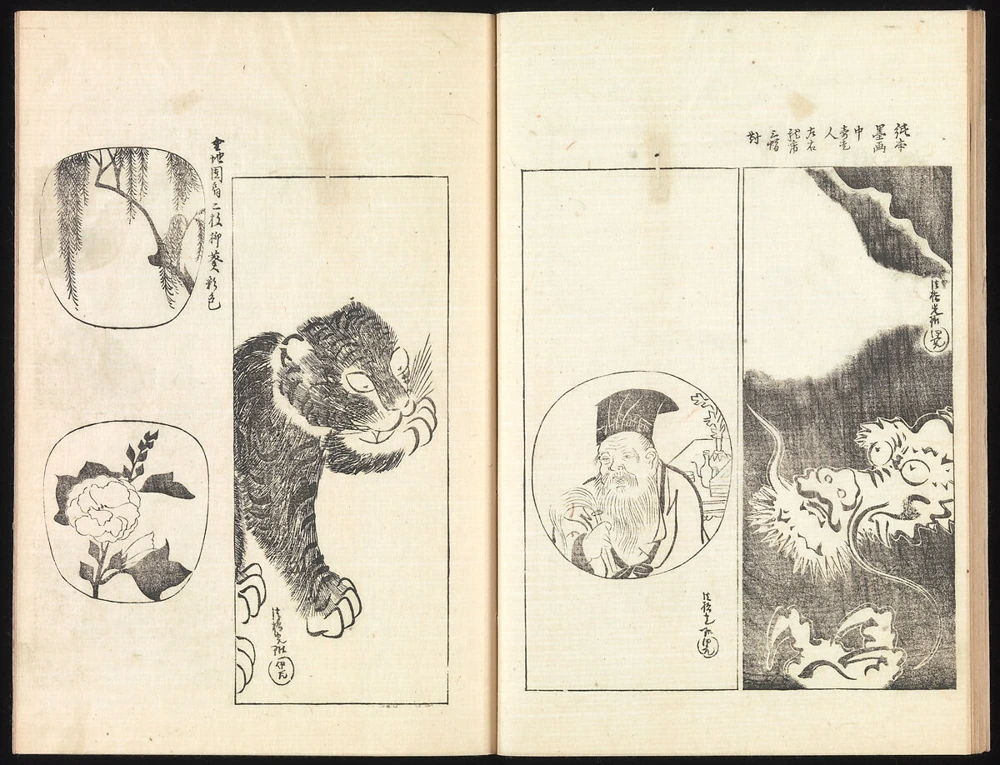

折れる橋が、視線を運ぶ。
左下から斜めに上がり、水平に伸び、再び右上へ。橋の角度の切り替えが、横長の画面を読む道筋になります。
作品・制作の例9件を紹介しています。実作品画像8点、参照・関連画像0点。画像の収集は継続中です。
後世に整理された様式・芸術的継承の系譜
琳派（りんぱ）は、一つの学校に集まった人たちの名前ではありません。後の時代の作者が、昔の絵や図案に学びながら、新しい作品をつくりました。
花や木だけでなく、何も描かない広い部分にも注目してみましょう。紙の絵、焼きもの、漆（うるし）の箱では、同じ形も違って見えます。
実作品を見る

画像を表示できませんでした。下の出典ページで確認できます。
尾形光琳 / 1709年以後
掲載は六曲一双のうち一隻。画像1点として収録し、左右の位置は未確定として扱います。光悦の色紙・抱一の屏風と合わせ、書・絵・時代をまたぐ表現を比較できます。
左下から斜めに上がり、水平に伸び、再び右上へ。橋の角度の切り替えが、横長の画面を読む道筋になります。
青紫の花と細長い緑の葉が群れを作ります。同じ形の単純な等間隔ではなく、群れの幅と空きを比べてみてください。
橋や花の間、右下に大きく残る金色の面。何も描かれていない部分が、密集した花や橋の輪郭を際立たせています。
Ogata Kōrin, Irises at Yatsuhashi (Eight Bridges), after 1709. The Metropolitan Museum of Art, Purchase, Louisa Eldridge McBurney Gift, 1953 (53.7.1, .2). Public Domain / CC0.
出典で作品・資料を見る ↗CC0 1.0 Universal（MetのPD画像Open Access方針）
individual record Public Domain label
Official PD artwork image provided under the Met OpenAccess CC0 policy
US museum assessment, not a claim of universal jurisdictional guarantee
Metの公式配信JPEG（1200×582px）は無加工で保持し、原寸リンクから開けます。
小画面には縦横比・全体構図・色を保持した720pxのJPEGも用意。
最高解像度の原本とは断定しません。
旧ユーザー提供JPEGは来歴資料として保存し、掲載には使用していません。
画像の利用条件 ↗Aspect-preserving LANCZOS resize; 720px JPEG quality90, 4:4:4 chroma, original ICC retained. Original1200px JPEG unchanged; no crop, retouch or overlays.
実作品を見る

画像を表示できませんでした。下の出典ページで確認できます。
書：本阿弥光悦／下絵：伝 俵屋宗達 / 1606年
色紙の画面と表装の一部を写した画像です。掛軸全体ではありません。書は光悦、下絵は宗達に帰属とされ、鴨長明は歌の作者です。
中央付近の太く大きな字と、細く小さな連なりが同じ紙面にあります。均等な行・字幅ではなく、筆線の伸び縮みと空きを見てください。
灰色に見える桜が上下の周縁に重なり、中央には書を読むための空きが残ります。花と字が接する部分もあり、背景と文字が完全に分離していません。
歌の作者は鴨長明、書は光悦です。下絵は宗達への帰属という館の判断。館の説明では歌は秋を詠み、桜の下絵と一対一の挿絵関係とは限りません。
Calligraphy by Hon’ami Kōetsu; underpainting attributed to Tawaraya Sōtatsu. Poem by Kamo no Chōmei with Underpainting of Cherry Blossoms, 1606. The Metropolitan Museum of Art, The Harry G. C. Packard Collection of Asian Art, Gift of Harry G. C. Packard, and Purchase, Fletcher, Rogers, Harris Brisbane Dick, and Louis V. Bell Funds, Joseph Pulitzer Bequest, and The Annenberg Fund Inc. Gift, 1975 (1975.268.59). Public Domain / CC0.
出典で作品・資料を見る ↗CC0 1.0 Universal
individual record Public Domain label
Official PD artwork image provided under the Met OpenAccess CC0 policy
US museum assessment, not a claim of universal jurisdictional guarantee
Met公式配信JPEGを無加工で保持し、拡大リンクから開けます。表示用画像は縦横比を保った縮小のみ（切り抜き・色補正なし）。撮影者名は未確認で、機関の個別CC0画像方針に基づきます。
画像の利用条件 ↗Aspect-preserving LANCZOS resize,WebP quality92/method6;no crop,color adjustment orupscale;use unchanged originalJPEG for900px because re-encodedWebP is larger
実作品を見る

画像を表示できませんでした。下の出典ページで確認できます。
酒井抱一 / 1820年代初め
六曲一双のうち桜と柳の一隻。館の画像指定は「screen .1, overall」です。一双全体や紅葉側の画像ではなく、左右の位置は断定しません。
右寄りの太い幹は下から斜め上へ伸び、柳の細い枝は上から垂れます。線の太さと方向を対比させると、同じ植物でも画面内の役割が異なります。
桜の白い花は上部と右側に集まり、左側には広い金地が残ります。光琳の八橋図の花の反復と比べ、密集する位置と空きの形を辿れます。
掲載面で見えるのは桜と柳。館の作品名は《桜楓図屏風》ですが、対となる紅葉側はこの画像にはありません。季節の対比は館の解説として区別します。
Sakai Hōitsu, Cherry and Maple Trees, early 1820s, screen .1, overall. The Metropolitan Museum of Art, Purchase, Mary and James G. Wallach Foundation Gift, Rogers and Mary Livingston Griggs and Mary Griggs Burke Foundation Funds, and Brooke Russell Astor Bequest, 2018 (2018.55.1, .2). Public Domain / CC0.
出典で作品・資料を見る ↗CC0 1.0 Universal
individual record Public Domain label
Official PD artwork image provided under the Met OpenAccess CC0 policy
US museum assessment, not a claim of universal jurisdictional guarantee
Met公式配信JPEGを無加工で保持し、拡大リンクから開けます。表示用画像は縦横比を保った縮小のみ（切り抜き・色補正なし）。撮影者名は未確認で、機関の個別CC0画像方針に基づきます。
画像の利用条件 ↗Aspect-preserving LANCZOS resize,WebP quality92/method6;no crop,color adjustment orupscale
実作品を見る

画像を表示できませんでした。下の出典ページで確認できます。
鈴木其一（すずき・きいつ） / 19世紀初め（Met個別作品記録）
二隻で一作品です。年代はMet個別記録の「19世紀初め」に従います（同館の別解説では1850年頃）。
青い花と緑の葉が、上から下へ大きくうねります。花が集まる所と、金色だけが見える所を比べてみましょう。
鈴木其一（すずき・きいつ）《朝顔図屏風（あさがおずびょうぶ）》、19世紀初め（Met個別作品記録）。メトロポリタン美術館、54.69.1, .2。Seymour Fund, 1954。Public Domain / CC0。
出典で作品・資料を見る ↗CC0 1.0 Universal
所蔵館の個別作品記録にPublic Domain表示。
Public Domain画像に適用されるMetのCC0方針。
公式JPEGは無加工。小画面用WebPは全画面と縦横比を保った縮小です。切抜き・色補正なし。
公式配信JPEGの全体を保持。小画面用の縮小WebPを併用します。
画像の利用条件 ↗実作品を見る

画像を表示できませんでした。下の出典ページで確認できます。
鈴木其一（すずき・きいつ） / 19世紀初め（Met個別作品記録）
二隻で一作品です。年代はMet個別記録の「19世紀初め」に従います（同館の別解説では1850年頃）。
もう一方にも同じ花や葉が現れますが、かたまりの位置や空いた形が違います。二枚の画像を見比べると、くり返しと変化がわかります。
鈴木其一（すずき・きいつ）《朝顔図屏風（あさがおずびょうぶ）》、19世紀初め（Met個別作品記録）。メトロポリタン美術館、54.69.1, .2。Seymour Fund, 1954。Public Domain / CC0。
出典で作品・資料を見る ↗CC0 1.0 Universal
所蔵館の個別作品記録にPublic Domain表示。
Public Domain画像に適用されるMetのCC0方針。
公式JPEGは無加工。小画面用WebPは全画面と縦横比を保った縮小です。切抜き・色補正なし。
公式配信JPEGの全体を保持。小画面用の縮小WebPを併用します。
画像の利用条件 ↗実作品を見る

画像を表示できませんでした。下の出典ページで確認できます。
尾形乾山（おがた・けんざん）の様式／作者未詳 / 18世紀
所蔵館の現在の作者表記は「乾山の様式」です。乾山本人の作、または光琳と乾山の共同制作とは断定しません。
内側には緑の草や小さな青い花が広がり、外側には青い模様がくり返されます。皿の縁をまたぐ草の描き方にも注目しましょう。
尾形乾山（おがた・けんざん）の様式／作者未詳《春の草花を描いた角皿（かくざら）》、18世紀。メトロポリタン美術館、2015.300.269。Mary Griggs Burke Collection, Gift of the Mary and Jackson Burke Foundation, 2015。Public Domain / CC0。
出典で作品・資料を見る ↗CC0 1.0 Universal
所蔵館の個別作品記録にPublic Domain表示。
Public Domain画像に適用されるMetのCC0方針。
公式JPEGは無加工。小画面用WebPは全画面と縦横比を保った縮小です。切抜き・色補正なし。
公式配信JPEGの全体を保持。小画面用の縮小WebPを併用します。
画像の利用条件 ↗実作品を見る

画像を表示できませんでした。下の出典ページで確認できます。
本阿弥光悦（ほんあみ・こうえつ）の様式／作者未詳 / 18世紀または19世紀初め
光悦本人の作ではなく、その様式を受け継ぐ後世の作です。文学との関係には複数の説があり、一つの物語の図解とは断定しません。掲載写真はふた側で、箱の内部は示していません。
顔や手足は明るい貝の部分です。背負った大きな柴と、小さな人の体のつり合いを見てみましょう。絵の具とは違い、材料の色や光り方も表現になります。
本阿弥光悦（ほんあみ・こうえつ）の様式／作者未詳《柴を運ぶ人を表した硯箱（すずりばこ）》、18世紀または19世紀初め。メトロポリタン美術館、29.100.689。H. O. Havemeyer Collection, Bequest of Mrs. H. O. Havemeyer, 1929。Public Domain / CC0。
出典で作品・資料を見る ↗CC0 1.0 Universal
所蔵館の個別作品記録にPublic Domain表示。
Public Domain画像に適用されるMetのCC0方針。
公式JPEGは無加工。小画面用WebPは全画面と縦横比を保った縮小です。切抜き・色補正なし。
公式配信JPEGの全体を保持。小画面用の縮小WebPを併用します。
画像の利用条件 ↗実作品を見る

画像を表示できませんでした。下の出典ページで確認できます。
酒井抱一（さかい・ほういつ）／尾形光琳の作品に基づく / 1815年（前編二冊）・1826年（続編二冊）
掲載画像は四冊組のうち一つの見開きです。光琳本人がこの本を作ったわけではありません。画像から巻数・丁数は確定していません。
見開きに虎や龍、人物や植物の図が並んでいます。囲みの形や線の太さを比べると、本が図案を伝える手本にもなることがわかります。
酒井抱一（さかい・ほういつ）／尾形光琳の作品に基づく《『光琳百図（こうりんひゃくず）』》、1815年（前編二冊）・1826年（続編二冊）。メトロポリタン美術館、JIB118a–d。The Howard Mansfield Collection, Gift of Howard Mansfield, 1936。Public Domain / CC0。
出典で作品・資料を見る ↗CC0 1.0 Universal
所蔵館の個別作品記録にPublic Domain表示。
Public Domain画像に適用されるMetのCC0方針。
公式JPEGは無加工。小画面用WebPは全画面と縦横比を保った縮小です。切抜き・色補正なし。
公式配信JPEGの全体を保持。小画面用の縮小WebPを併用します。
画像の利用条件 ↗書・下絵・色紙
桜を描いた紙に、和歌が書かれています。
大きな字と小さな字、太い線と細い線が、一枚の中にあります。
歌をつくった人と、文字を書いた人は別です。
作品・資料の出典を見る ↗作品名（出典表記）：Poem by Kamo no Chōmei with Underpainting of Cherry Blossoms
書：本阿弥光悦／下絵：俵屋宗達に帰属（Metの表記） / 1606（Met 1975.268.59） / 書・下絵・色紙
館は、下絵を宗達（そうたつ）の作と考えられるものとしています。署名によって作者が確定した作品とは扱いません。色紙を掛軸（かけじく）に仕立てた作品です。館の解説は、和歌に詠まれた秋と、下絵の桜を区別しています。絵が歌の内容をそのまま描いているとは限りません。
文学、文字、絵を組み合わせた制作を説明する候補です。屏風（びょうぶ）だけでなく、身近な一枚の紙での表現も比べます。
絵画・二曲一双屏風
風の神と雷の神を描いた、折りたためる大きな絵です。
金色の地が、二人の姿を目立たせています。
後の時代の画家がどう描き直したかを、比べる出発点にもなります。
作品・資料の出典を見る ↗作品名（出典表記）：風神雷神図屏風
俵屋宗達（京都国立博物館の帰属判断） / 17世紀・江戸時代 / 絵画・二曲一双屏風
建仁寺（けんにんじ）の所蔵です。署名や印がない「無款無印（むかんむいん）」とされ、書かれた名前によって作者が確定しているわけではありません。宗達の原作と、後の時代の模写や、新しい解釈を加えた作品を区別します。
金色の地は、人物を目立たせながら、どこまでも広がるような空間を生みます。光琳（こうりん）や抱一（ほういつ）がどう描き直したかを比べる、出発点になる作品です。
絵画・六曲一双屏風
橋と花を描いた、横に長い絵です。
橋は途中で向きを変え、花は集まったり、間を空けたりしています。
人は描かれていませんが、昔の物語とつながっています。
作品・資料の出典を見る ↗作品名（出典表記）：Irises at Yatsuhashi (Eight Bridges) — 八橋図屏風
尾形光琳 / 1709年以後（Met 53.7.1, .2） / 絵画・六曲一双屏風
根津美術館（Nezu）所蔵の《燕子花図屏風》とは別の作品です。
解説の「1710年頃」と、クレジットの「1709年以後」は区別し、ここでは所蔵表記に従っています。
掲載したのは一隻（いっせき。
対になった屏風の片側）だけです。
一双（いっそう。
左右一組）全体を見た結果としては説明しません。
斜めに渡る橋と、繰り返す花を見ます。人物を描かずに『伊勢物語』とのつながりを示す例です。形を単純にすることだけでなく、文学から絵を読み解く方法も説明できます。
漆工・硯箱
筆記の道具を入れる箱に、橋や花を表しています。
花には貝、橋には鉛の板など、違う材料を使っています。
絵の具でかく絵と、材料の違いも比べられます。
作品・資料の出典を見る ↗作品名（出典表記）：八橋蒔絵螺鈿硯箱
尾形光琳 / 江戸時代・18世紀（東京国立博物館 H-86） / 漆工・硯箱
漆（うるし）を塗った木製の二段の箱です。上は硯箱（すずりばこ）、下は紙を入れる料紙箱（りょうしばこ）です。閉じた外側と、内側の波模様を区別します。屏風の図案を後から硯箱へ移した、という制作順序は、この資料だけでは断定できません。画像ごとの利用条件は未確認です。
屏風にも登場する八橋（やつはし）の題材を、筆記用の道具と比べます。館の解説によると、花には貝、葉や茎には蒔絵（まきえ。漆で描いた模様に金属の粉などをまく技法）、橋には鉛の板を使っています。図案だけでなく、材料や使う場面によって組み立て方が変わる例です。
絵画・六曲一双屏風
ここに載せた側には、桜と柳が描かれています。
太い幹と、細くたれる枝は、線の太さも向きも違います。
花が集まる所と、金色だけの所も比べてみましょう。
作品・資料の出典を見る ↗作品名（出典表記）：Cherry and Maple Trees — 桜楓図屏風
酒井抱一 / 1820年代初め（Met 2018.55.1, .2） / 絵画・六曲一双屏風
六つ折りの屏風が左右一組になった「六曲一双（ろっきょくいっそう）」のうち、桜と柳の側を掲載しています。
紅葉の側は、この画像にはありません。
館が指定した画像は「screen .1, overall」で、左右のどちらかは断定しません。
其一（きいつ）が工房にいたというだけで、共同作者とはしません。
京都の光琳の作品だけを完成形とせず、江戸でどう受け止め直したかを比べます。館の解説をもとに、春の桜や柳と、秋の楓（かえで）を見比べます。季節の植物が、詩のような意味を伝える点に注目します。
絵画・六曲一双の屏風
金地に青い花と緑の葉を大きく広げ、描かない部分も形として使っています。抱一から其一へ受け継がれた江戸の琳派を、花の集まり方とつるの動きで比べられます。
作品・資料の出典を見る ↗原題：Morning Glories
鈴木其一（すずき・きいつ） / 19世紀初め（Met個別作品記録） / 絵画・六曲一双の屏風
二隻で一作品です。年代はMet個別記録の「19世紀初め」に従います（同館の別解説では1850年頃）。
陶芸・京焼
色紙のような四角い面に、春の草花を描いた器です。美術館は、乾山の絵付けと琳派の美意識のつながりを説明しています。平らな絵と、食べ物を盛る立体の道具を比べる例です。
作品・資料の出典を見る ↗原題：Square Dish with Spring Flowers and Grasses
尾形乾山（おがた・けんざん）の様式／作者未詳 / 18世紀 / 陶芸・京焼
所蔵館の現在の作者表記は「乾山の様式」です。乾山本人の作、または光琳と乾山の共同制作とは断定しません。
漆工・筆記用の道具
丸みのあるふたに、柴を背負う人を大きく表しています。館は、光悦に結びつく図案が模写や木版の手本によって後世へ広がった例と説明しています。同時代の一団ではない琳派の、受け継ぎ方を考えられます。
作品・資料の出典を見る ↗原題：Writing Box (Suzuribako) with Woodcutter
本阿弥光悦（ほんあみ・こうえつ）の様式／作者未詳 / 18世紀または19世紀初め / 漆工・筆記用の道具
光悦本人の作ではなく、その様式を受け継ぐ後世の作です。文学との関係には複数の説があり、一つの物語の図解とは断定しません。掲載写真はふた側で、箱の内部は示していません。
出版・木版の図集
光琳の作品を、後の時代の抱一が木版の本で伝えました。絵を直接教わらなくても、作品や手本から学べることが、琳派の継承を考える手がかりになります。
作品・資料の出典を見る ↗原題：One Hundred Paintings by Kōrin (Kōrin hyakuzu)
酒井抱一（さかい・ほういつ）／尾形光琳の作品に基づく / 1815年（前編二冊）・1826年（続編二冊） / 出版・木版の図集
掲載画像は四冊組のうち一つの見開きです。光琳本人がこの本を作ったわけではありません。画像から巻数・丁数は確定していません。
宗達、光琳、抱一は、同じ時代の仲間ではありません。先に生きた人の作品を見て学び、自分の時代に作り直しました。「琳派」の「琳」は光琳の名に由来しますが、光琳が一つの学校を開いたという意味ではありません。
作品を受け継ぐことは、そっくりに写すことだけではありません。同じ題材で何を残し、何を変えたのかを比べると、時代を越えたやり取りが見えます。
本阿弥光悦（ほんあみこうえつ）の書と宗達の下絵が重なる作品では、文字を絵から切り離せません。《鶴下絵三十六歌仙和歌巻》は、金銀で描いた鶴と和歌が長い紙の上で出会う作品です。
鳥が集まる所と、空間が開く所。文字が続く速さ。巻物を少しずつ開くと、絵と文字が作るリズムを楽しめます。掲示用の一枚絵とは、見る時間の流れも違います。
光琳の《八橋図屏風（やつはしずびょうぶ）》には、橋とカキツバタが描かれています。題材は『伊勢物語』。旅人が花を前に和歌を詠む場面につながりますが、絵にはその旅人を描いていません。
橋が斜めに折れ、花がくり返され、その間に金色の空間が残ります。人物の説明を省くことで、見る人が物語や季節を思い浮かべる余地が生まれます。
The Metropolitan Museum of Art ↗ / The Metropolitan Museum of Art ↗
《八橋蒔絵螺鈿硯箱（やつはしまきえらでんすずりばこ）》は、書道の道具などを入れる二段の箱です。花には光る貝、橋には鉛、杭には銀、葉や茎には金の蒔絵を使っています。
屏風の絵と、同じ題材を使う道具を比べてみましょう。平らな紙に描く場合と、ふたや側面を持つ箱に組み立てる場合では、模様の見える順序も変わります。
抱一の《桜楓図屏風（おうふうずびょうぶ）》では、木の幹のまだ湿った部分へ墨などを加え、にじみを生かす「たらしこみ」が使われています。花や葉のくっきりした形とは、違う表情です。
春の桜や柳と、秋の楓を対にした作品です。一度に目の前にある風景を写すのではなく、季節を組み合わせています。掲載画像が一方だけなら、もう一方の季節まで写っていると考えないようにしましょう。
The Metropolitan Museum of Art ↗ / The Metropolitan Museum of Art ↗
屏風は、折って立てることで部屋の空間を区切る道具でもあります。平らな写真だけではわかりにくい、折れ目や置く場所にも意味があります。
抱一は光琳の作品を調べ、木版の本『光琳百図（こうりんひゃくず）』にまとめました。図案や本を通じて、絵の考え方は離れた場所の工芸にも届きます。実物を見ることと、本から学ぶことの両方が、受け継ぐ力になったのです。
The Metropolitan Museum of Art ↗ / The Metropolitan Museum of Art ↗
京都・17世紀
書や絵、工芸が関わり合う環境から、後に琳派へつながる表現が生まれました。
京都・17世紀末〜18世紀初め
呉服商の家に生まれた光琳と弟の乾山（けんざん）。絵と器など、材料を越えて図案を考えました。
江戸・19世紀
抱一は先人を調べ直し、季節の草木へ目を向けました。鈴木其一（すずききいつ）は、その仕事をさらに広げた作者です。
光悦の書と宗達に帰属する桜の下絵を組み合わせた色紙が残る。
光悦が京都・鷹峯（たかがみね）に芸術に関わる人々の共同体をつくる。
光琳が《八橋図屏風》を描く。メトロポリタン美術館所蔵の一双の年代。
抱一の『光琳百図』最初の二巻が出る。続く二巻は1826年。
抱一が《桜楓図屏風》を描く。春と秋の草木を組み合わせる。
「琳派」という呼び名が使われるようになる。作者たち自身の共通の団体名ではない。
琳派は、一つの学校で先生から弟子へ続いた団体ではありません。俵屋宗達（たわらやそうたつ）、尾形光琳（おがたこうりん）、酒井抱一（さかいほういつ）らが、時代を越えて先人の作品に学びました。「琳派」という呼び名自体も、江戸時代の後に生まれています。
鮮やかな色の作品も、墨一色の作品もあります。《風神雷神図》では、金箔（きんぱく）の背景が画面を飾ると同時に、空間の広がりも生みます。金色を使っているだけで琳派とは決められません。
書は、筆の運びも見どころです。光悦（こうえつ）の和歌色紙では、筆の跡と下絵がどう関わるかを見ます。手書きの書を、現代の印刷用の書体であるフォントの分類にそのまま当てはめないようにします。
光琳の《八橋図》では、くり返す花と、角度をつけて置かれた橋に注目します。その形がどんな物語を思い起こさせるのかも、作品ごとに確かめます。
何を描き、何を描かずに残したのでしょう。《八橋図》は、人物を描かなくても文学の場面を思い起こさせる例です。余白、形のくり返し、省かれたものを、実際の作品で確かめます。
先生と弟子のつながりだけでは説明できず、作品や本を見て、昔の作者から学んだ人たちもいます。また、金色の背景や花の絵があれば、どれも琳派になるわけではありません。作者の交流、学んだ作品、題材の受け継がれ方まで見ることが大切です。
同じ花を何度も置く、形を思いきって省く、何も描かない場所を広く残す。琳派を見ると、画面の組み立て方を考えるヒントが見つかります。ただし現代の包装やポスターとの関係は、見た目の似方だけでなく、制作者の資料から確かめましょう。
光悦（こうえつ）の書と下絵、光琳（こうりん）の橋と花、抱一（ほういつ）の樹木の配置という3点を比べます。
紙と屏風（びょうぶ）の違いや、時代を越えた表現のつながりが見えてきます。
一つの学校や、同じ描き方の集団としてはまとめません。
漆工（しっこう。
漆を使う工芸）など、ほかの分野は今後加える候補です。
作品・制作の例9件を紹介しています。実作品画像8点、参照・関連画像0点。画像の収集は継続中です。